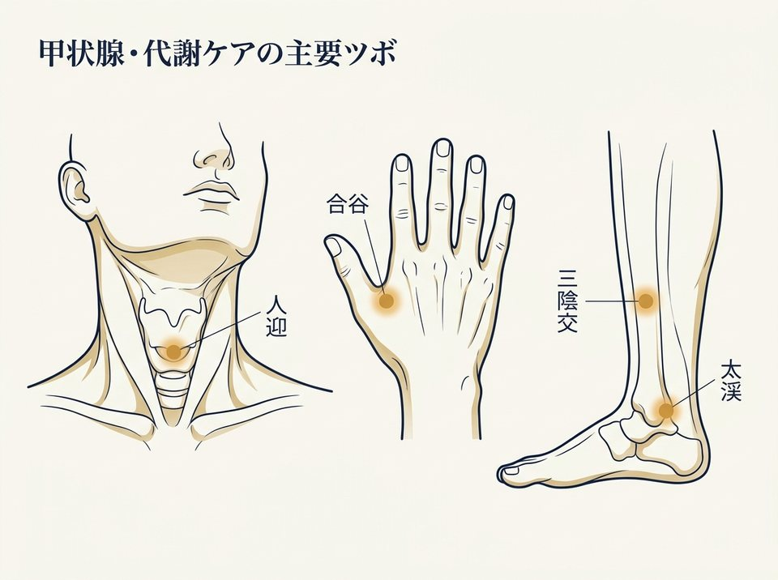

レイノー病の鍼灸
寒冷刺激や緊張で手足の末梢動脈が一時的に攣縮し指先が白・紫になる機能性動脈疾患。保温と自律神経ケアで発作要因の軽減を目指します。


院長YouTube解説・関連動画
レイノー病の症状は、しびれや冷感、痛みなど
レイノー病の症状は、寒い時手や足の指が真っ白になったり紫色になったりして、しびれや冷感、痛みなどが起きることです。レイノー病の特徴は、症状が左右対称現れることです。
症状が起こった部分の皮膚の色は段々と青赤色から暗褐色になり、最終的には壊死をしてしまうこともあります。レイノー病はなおりにくい病気です。しかし、命に危険が及ぶような病気ではありません。
レイノー病を改善するためには、生活の中で症状が起きる要因を避けることが大切です。
日常生活の中で気をつけることは、ストレスをためないこと、冷たい水を使わないこと、十分な睡眠時間をとること、喫煙をすること、疲れをためないこと、体を冷やさないことなどです。
体を動かすことで筋肉や関節の機能を保つことができるため、適度な運度をすることも大切です。寒冷刺激で症状が起きることも多いため、外に出る時には手袋などで保温することも効果的です。
レイノー病は命に危険が及ぶ病気ではありませんが、症状が悪化すると臓器に障害が起きることもあります。指先が突然白くなったり、関節に痛みや腫れが起きたり、皮膚に赤いあざができたり、関節が変形したりした時は病院にいきましょう。
早く改善に向けて取り組むことが、症状を悪化させないためにも炎症をできるだけ抑えるためにも大切です。
▼ 詳しく知りたい項目だけタップして開けます（全項目の医学解説を収録）
01. 原因とメカニズム
なぜ症状が起きるのか・鍼灸の作用機序を読む
▼
01. 原因とメカニズム
なぜ症状が起きるのか・鍼灸の作用機序を読む
基礎疾患がない状態で、寒冷刺激や強い精神的緊張・ストレスをきっかけに指趾の末梢動脈が一過性に強く攣縮し、血流が途絶える機能性動脈疾患です。左右対称に白〜紫へと色調変化し、しびれや冷感、痛みを生じます。なお膠原病や閉塞性動脈疾患、薬剤、振動工具など基礎疾患に起因する場合はレイノー症候群と呼ばれ、鑑別が重要です。
なぜ鍼灸で改善へ向かうのか？（作用機序の図解）
レイノー病に対する鍼灸は、神経-内分泌-免疫ネットワークと末梢循環の調整機序を通じて、お体本来の回復力を引き出します。
内科専門医の薬物・食事管理を前提に、足三里・三陰交・背部経穴へ安全にアプローチします。
ストレス由来の交感神経過緊張を鎮め、ホルモン分泌や血糖・尿酸管理を乱す疲労要因を軽減します。
手足や内臓の血流を促し、合併しやすいしびれ・胃もたれ・倦怠感・関節痛の負担を和らげます。
皮膚衛生や低刺激を徹底し、日々の生活習慣改善を続けやすい安定した体調づくりを支えます。
02. よくあるお悩み
このような症状はありませんか？（4項目）
▼
02. よくあるお悩み
このような症状はありませんか？（4項目）
- ✓寒いとき手足の指先が左右対称に真っ白や紫色になる
- ✓指先の強い冷感やしびれ、痛みが出やすい
- ✓ストレスや強い緊張で症状が誘発される
- ✓膠原病などの基礎疾患が隠れていないか不安
03. 当院の施術アプローチ
施術の進め方・改善のポイントを見る
▼
03. 当院の施術アプローチ
施術の進め方・改善のポイントを見る
04. ツボ詳細・セルフケア一覧
内分泌・糖尿病・甲状腺・代謝の全身ツボ図解（6穴）
▼
04. ツボ詳細・セルフケア一覧
内分泌・糖尿病・甲状腺・代謝の全身ツボ図解（6穴）
実際の施術ではお一人おひとりの体質・症状に合わせて選穴しますが、糖尿病合併症・甲状腺機能異常・メタボリック・代謝異常の併用サポートの臨床でよく用いられる代表的なツボの目安です。
| ツボ名 | 位置の目安 | 主な狙い | セルフケアの注意点 |
|---|---|---|---|
| 脾兪（ひゆ） | 背中の中央やや下、背骨の外側 | 糖代謝・消化吸収・食後のだるさサポート | 糖尿病・甲状腺疾患は必ず内分泌内科の標準治療を最優先します。 |
| 腎兪（じんゆ） | 腰のくびれの高さ、背骨の外側 | 内分泌系・倦怠感・冷えとむくみの土台づくり | 糖尿病神経障害がある場合は火傷防止のため強い熱刺激を避けます。 |
| 中脘（ちゅうかん） | みぞおちとおへその中間 | 胃腸機能・糖尿病性胃不全麻痺の自律神経サポート | 食後すぐの強圧迫は避け穏やかに整えます。 |
| 関元（かんげん） | おへそから指4本分下 | 基礎代謝・下腹部の巡りと疲労回復補助 | 低血糖症状（冷や汗・震え）があるときは直ちに補食してください。 |
| 足三里（あしさんり） | 膝の下外側、指4本分下 | 下肢の末梢循環・神経障害予防の全身調整 | 足先に傷や潰瘍がある場合は絶対に患部へ施術しません。 |
| 三陰交（さんいんこう） | 内くるぶしの上から指4本分上 | ホルモン・代謝・睡眠と末梢血流の調和 | 厳格な衛生管理と低刺激で安全に継続します。 |
05. 医学的根拠・国際査読論文（PubMed / Cochrane）
科学的エビデンス・出典リンク一覧（4件）
▼
05. 医学的根拠・国際査読論文（PubMed / Cochrane）
科学的エビデンス・出典リンク一覧（4件）
国際的な医学データベース（PubMed・Cochrane等）で報告されている糖尿病合併症・甲状腺機能異常・メタボリック・代謝異常の併用サポート領域の代表的な査読済み鍼灸研究をまとめています（標準治療との併用や研究上の限界を含めて正確に掲載）。
| 年・研究デザイン | 対象・規模 | 主な結果 | 限界・出典 |
|---|---|---|---|
| 2026年 メタ解析 | 2型糖尿病 20 RCTs（n=1,479） | 空腹時血糖（SMD -0.52, p=0.009）、HbA1c（SMD -0.76, p=0.002）、HOMA-IR（p<0.0001）を有意低減。 | 将来研究のばらつき懸念。食事・運動・薬物療法の継続必須。 Postgrad Med J (PMID: 41052150) |
| 2025年 メタ解析 | 糖尿病性末梢神経障害（DPN）14 RCTs（n=1,169） | 偽鍼比でVAS疼痛-1.44cm、神経症状スコアTCSSも有意改善（WMD -1.22）。 | GRADE確実性は低い。足部の熱傷・感染予防に細心の注意。 Curr Pain Headache Rep (PMID: 40220243) |
| 2024年 メタ解析 | 橋本病（慢性甲状腺炎）14 RCTs（n=1,020） | レボチロキシン単独比でTPOAb・TGAb低下およびTSH・FT3・FT4の調整を示唆（p<0.00001）。 | 中国国内RCT中心・盲検化不足。甲状腺薬の自己中断は厳禁。 Medicine (PMID: 38428856) |
| 2024年 メタ解析 | 単純性肥満 25 RCTs（n=2,018・生活習慣併用） | 生活習慣単独比で体重-4.73・BMI -2.11・腹囲-4.96（p<0.00001）、中性脂肪・LDLも有意改善。 | 介入期間・方法の異質性高、長期リバウンド防止は要検証。 Diabetes Metab Syndr Obes (PMID: 39582784) |
参考文献・出典
- 2026年 メタ解析（2型糖尿病 20 RCTs（n=1,479））— Postgrad Med J (PMID: 41052150)
- 2025年 メタ解析（糖尿病性末梢神経障害（DPN）14 RCTs（n=1,169））— Curr Pain Headache Rep (PMID: 40220243)
- 2024年 メタ解析（橋本病（慢性甲状腺炎）14 RCTs（n=1,020））— Medicine (PMID: 38428856)
- 2024年 メタ解析（単純性肥満 25 RCTs（n=2,018・生活習慣併用））— Diabetes Metab Syndr Obes (PMID: 39582784)
06. よくある質問（FAQ）
よくあるご質問を見る（2件）
▼
06. よくある質問（FAQ）
よくあるご質問を見る（2件）
Q. レイノー病とレイノー症候群の違いは何ですか？
基礎疾患がなく寒冷やストレスで起こるものをレイノー病、膠原病や血管疾患・薬剤など原因疾患に伴って起こるものをレイノー症候群と呼びます。
Q. 日常生活で最も気をつけることは何ですか？
手袋などで体を冷やさないこと、冷たい水を避けること、禁煙や十分な睡眠で血管収縮の引き金となる刺激とストレスを減らすことが重要です。
あわせて読まれる関連疾患（内分泌のお悩み）
下垂体前葉ホルモンの分泌低下で全身の代謝や血圧・性機能に影響する疾患。専門医のホルモン補充を最優先し、安定期の体調管理を補完します。
自己免疫の異常で甲状腺に慢性炎症が起こる代表的な甲状腺機能低下症。専門医の管理と並行し、冷えやむくみ・倦怠感を穏やかにケアします。
皮膚の下に余分な水分がたまる状態。腎臓・心臓・肝臓等の基礎疾患確認を優先し、血流低下や自律神経由来のむくみを穏やかに整えます。
脳下垂体の良性腫瘍により成長ホルモンが過剰分泌される疾患。専門医の手術・薬物療法と合併症管理を最優先し、安定期の体調ケアを補完します。
粘液腫・皮膚色素斑・内分泌機能亢進を伴う多発性腫瘍症候群。専門医の定期検査と治療を最優先し、安定期の心身ケアを穏やかに補完します。
植物ステロールが体内に蓄積し黄色腫や早発性動脈硬化を招く希少遺伝疾患。専門医の管理を軸に、安定期の体調・自律神経ケアを補完します。
CLINICAL RECOVERY CASES
✨ 実際の臨床改善事例・回復経過を見る
銀座本院をはじめ各院での実際の改善事例を症状別に絞り込んでご確認いただけます。
おひとりで悩まず、まずはご相談ください
銀座本院・川口・大宮・横浜・博多・田無の各院でご予約を承っております。